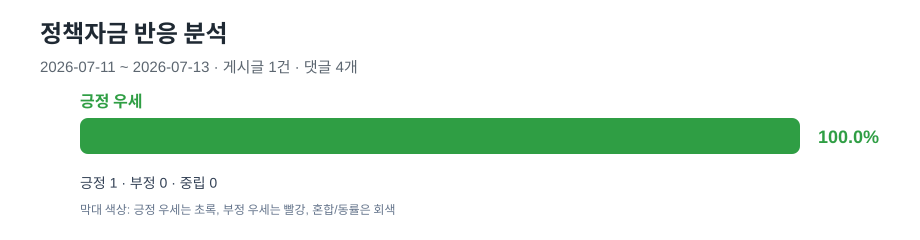

정책자금 반응 리포트
2026-07-11 ~ 2026-07-13 기간 취합 분석 결과입니다.
전체 게시글1
전체 댓글4
우세 반응긍정 우세
우세 비율100.0%
기간 전체 취합

일자별 보기
2026-07-11 · 중립/혼합 · 게시글 0건
긍정 0 · 부정 0 · 중립 0 · 댓글 0개
해당 기간에 표시할 게시글이 없습니다.
2026-07-12 · 중립/혼합 · 게시글 0건
긍정 0 · 부정 0 · 중립 0 · 댓글 0개
해당 기간에 표시할 게시글이 없습니다.
2026-07-13 · 긍정 우세 · 게시글 1건
긍정 1 · 부정 0 · 중립 0 · 댓글 4개
| 분류 | 점수 | 제목 | 근거 키워드 |
|---|---|---|---|
| positive | 100 | 소상공인 정책자금 보증승인 받았는데요 | 가능, 걱정, 나쁘, 문제, 부담, 승인, 어렵, 연체, 위험, 잘, 좋, 좋아요, 추천, 필요 |
전체 게시글 판정
| 일자 | 분류 | 점수 | 제목 | 근거 키워드 |
|---|---|---|---|---|
| 2026-07-13 | positive | 100 | 소상공인 정책자금 보증승인 받았는데요 | 가능, 걱정, 나쁘, 문제, 부담, 승인, 어렵, 연체, 위험, 잘, 좋, 좋아요, 추천, 필요 |